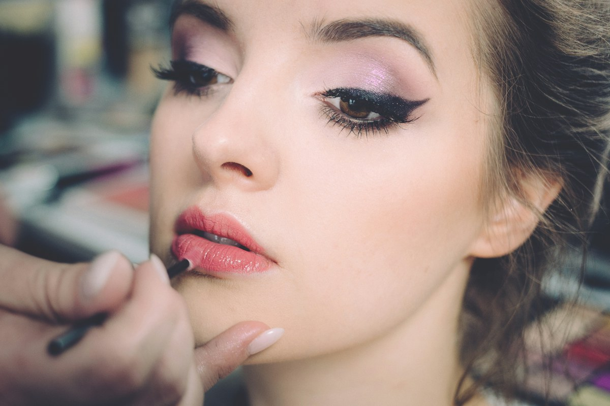
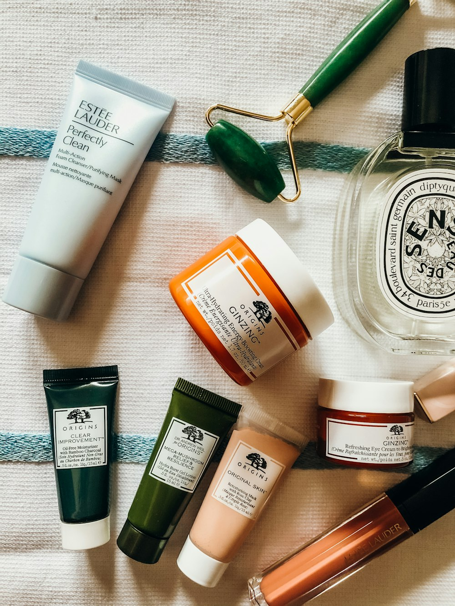

1
Conversa e medição
Perguntamos sobre o desenho que você quer e medimos o rosto para definir início, arco e fim da sobrancelha.
5 minutosO desenho da sobrancelha é medido conforme o formato do seu rosto. Ajustamos os fios sem exagerar.

O design de sobrancelhas é uma técnica que combina medição, limpeza e modelagem dos fios para criar um desenho equilibrado com o formato do rosto. Em Águas Claras, nossa equipe avalia seu rosto, a densidade dos fios e o seu gosto antes de começar.
Fazemos a medição dos pontos de referência, removemos os fios excessivos com pinça ou linha e aplicamos produto calmante. Quando indicado, usamos henna para preencher falhas e definir o desenho com mais precisão.
O resultado é uma sobrancelha simétrica, com o desenho escolhido por você.
Adaptamos o método ao seu tipo de fio e à sensibilidade da sua pele.
Precisão para remover fios indesejados e desenhar contornos bem definidos.
Remove os fios com rapidez. Usamos quando a pele é sensível.
Preenchimento natural de falhas e maior definição, com efeito que pode durar até 15 dias.
O atendimento leva de 30 a 45 minutos. O desenho é definido com você antes da remoção dos fios.
Perguntamos sobre o desenho que você quer e medimos o rosto para definir início, arco e fim da sobrancelha.
5 minutos
Retiramos resíduos de maquiagem e óleo da pele ao redor dos olhos.
5 minutos
Removemos os fios fora do desenho com pinça ou linha. A linha costuma ser escolhida para peles sensíveis.
15 minutos
Preenchemos falhas e uniformizamos a cor dos fios. A henna mantém a definição por até 15 dias.
10 minutosAplicamos produto calmante, escovamos os fios e explicamos como cuidar em casa.
5 minutosMudanhas práticas no desenho dos fios e na rotina de quem faz a modelagem.
Início, arco e fim da sobrancelha são marcados antes da remoção. Isso evita excesso de fios retirados.
A henna cobre falhas e deixa a cor dos fios uniforme por até 15 dias.
A linha remove os fios sem arrastar a pele. É a técnica que usamos quando há sensibilidade.
Com o desenho definido, você sabe quais fios retirar entre um atendimento e outro.
Imagens ilustrativas das técnicas usadas no design de sobrancelhas em Águas Claras.

Preços de referência em Águas Claras. A técnica é escolhida conforme o seu tipo de fio e a sensibilidade da pele.
| Procedimento | O que inclui | Valor |
|---|---|---|
| Design com pinça30 minutos | Medição, remoção dos fios e produto calmante | R$ 60 |
| Design com linha35 minutos | Medição, remoção com linha e produto calmante | R$ 70 |
| Design com henna45 minutos | Modelagem, preenchimento das falhas e acabamento | R$ 90 |
| Sobrancelha + buço45 minutos | Design das sobrancelhas e depilação do buço | R$ 80 |
| ManutençãoAté 30 dias após o primeiro atendimento | Ajuste do desenho e limpeza dos fios | R$ 45 |
O valor pode mudar conforme a quantidade de fios e o uso de henna. Confirme no agendamento pelo WhatsApp.
Para manter o desenho, siga estas orientações:
Evite molhar a região nas primeiras horas, não use maquiagem e não coce a área. A leve vermelhidão costuma passar em poucas horas.
Use um gel ou óleo próprio para hidratar os fios, escove as sobrancelhas diariamente e evite arrancar fios em casa. Retorne em 15 a 30 dias para manutenção.
O desconforto é leve. Usamos técnicas suaves e produto calmante.
O desenho dura de 15 a 30 dias. A henna mantém a definição por até 15 dias.
Sim. Medimos o seu rosto e definimos o desenho com você.
Um ambiente tranquilo para cuidar de você com atenção aos detalhes.


Fale com a gente pelo WhatsApp. A equipe mede o seu rosto antes de definir o desenho.
Agendar pelo WhatsApp